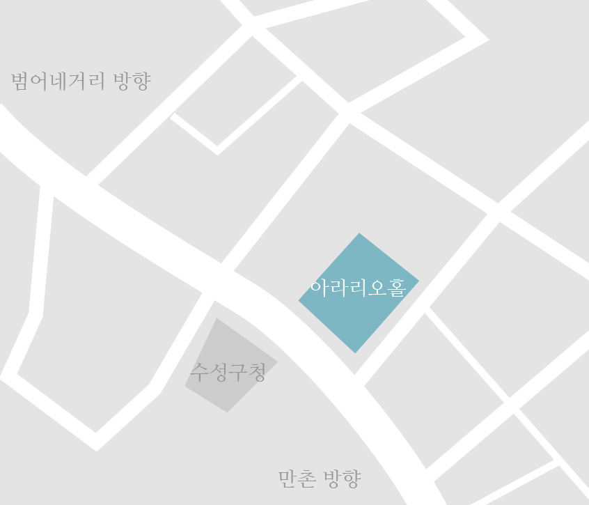

25현금 독주곡, 시간의 화살
‘한번 떠나간 화살은 되돌릴 수 없듯이 이미 흘러간 시간 또한 되돌릴 수 없다.’
이 곡은 상주 아리랑을 모티브로 민족의 애환과 삶을 25현금 가야금으로 표현한 작품이다.
일제시대 고향 상주를 떠나 백두산을 넘어 북간도를 거치고 머나먼 중앙아시아 땅에
정착한 우리 조상들의 애환과 슬픈 정서가 가사와 음악 속에 녹아있다.
안다겸
가야금
독주회
일시 / 2019년 5월 2일 오후3시
장소 / 아라리오 연주홀

알림사항
"독주회 시작 후 입장이 불가하므로 공연시간을 준수해주세요"